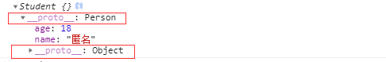

原文连接:https://www.cnblogs.com/abc-x/p/11161374.html
引言
Javascript是前端面试的重点，本文重点梳理下 Javascript 中的常考基础知识点，然后就一些容易出现的题目进行解析。限于文章的篇幅，无法将知识点讲解的面面俱到，本文只罗列了一些重难点。
一、变量类型
1.JS 的数据类型分类
根据 JavaScript 中的变量类型传递方式，分为基本数据类型和引用数据类型。其中基本数据类型包括Undefined、Null、Boolean、Number、String、Symbol (ES6新增，表示独一无二的值)，而引用数据类型统称为Object对象，主要包括对象、数组和函数。
在参数传递方式上，有所不同：
-
函数的参数如果是简单类型，会将一个值类型的数值副本传到函数内部，函数内部不影响函数外部传递的参数变量
-
如果是一个参数是引用类型，会将引用类型的地址值复制给传入函数的参数，函数内部修改会影响传递参数的引用对象。
题目：基本类型和引用类型的区别
基本类型和引用类型存储于内存的位置不同，基本类型直接存储在栈中,而引用类型的对象存储在堆中，与此同时，在栈中存储了指针，而这个指针指向正是堆中实体的起始位置。下面通过一个小题目，来看下两者的主要区别：
// 基本类型
var a = 10
var b = a
b = 20
console.log(a) // 10
console.log(b) // 20上述代码中，a b都是值类型，两者分别修改赋值，相互之间没有任何影响。再看引用类型的例子：
// 引用类型
var a = {x: 10, y: 20}
var b = a
b.x = 100
b.y = 200
console.log(a) // {x: 100, y: 200}
console.log(b) // {x: 100, y: 200}上述代码中，a b都是引用类型。在执行了b = a之后，修改b的属性值，a的也跟着变化。因为a和b都是引用类型，指向了同一个内存地址，即两者引用的是同一个值，因此b修改属性时，a的值随之改动
2.数据类型的判断
1）typeof
typeof返回一个表示数据类型的字符串，返回结果包括：number、boolean、string、symbol、object、undefined、function等7种数据类型，但不能判断null、array等
typeof Symbol(); // symbol 有效
typeof ''; // string 有效
typeof 1; // number 有效
typeof true; //boolean 有效
typeof undefined; //undefined 有效
typeof new Function(); // function 有效
typeof null; //object 无效
typeof [] ; //object 无效
typeof new Date(); //object 无效
typeof new RegExp(); //object 无效2）instanceof
instanceof 是用来判断A是否为B的实例，表达式为：A instanceof B，如果A是B的实例，则返回true,否则返回false。instanceof 运算符用来测试一个对象在其原型链中是否存在一个构造函数的 prototype 属性，但它不能检测null 和 undefined
[] instanceof Array; //true
{} instanceof Object;//true
new Date() instanceof Date;//true
new RegExp() instanceof RegExp//true
null instanceof Null//报错
undefined instanceof undefined//报错3）constructor
constructor作用和instanceof非常相似。但constructor检测 Object与instanceof不一样，还可以处理基本数据类型的检测。不过函数的 constructor 是不稳定的，这个主要体现在把类的原型进行重写，在重写的过程中很有可能出现把之前的constructor给覆盖了，这样检测出来的结果就是不准确的。
4）Object.prototype.toString.call()
Object.prototype.toString.call() 是最准确最常用的方式。
Object.prototype.toString.call('') ; // [object String]
Object.prototype.toString.call(1) ; // [object Number]
Object.prototype.toString.call(true) ; // [object Boolean]
Object.prototype.toString.call(undefined) ; // [object Undefined]
Object.prototype.toString.call(null) ; // [object Null]
Object.prototype.toString.call(new Function()) ; // [object Function]
Object.prototype.toString.call(new Date()) ; // [object Date]
Object.prototype.toString.call([]) ; // [object Array]
Object.prototype.toString.call(new RegExp()) ; // [object RegExp]
Object.prototype.toString.call(new Error()) ; // [object Error]3.浅拷贝与深拷贝
浅拷贝只复制指向某个对象的指针，而不复制对象本身，新旧对象还是共享同一块内存。
浅拷贝的实现方式（详见https://github.com/ljianshu/Blog/issues/5）：
-
Object.assign()：需注意的是目标对象只有一层的时候，是深拷贝
-
Object.assign(target, ...sources);target：目标对象，sources：一个或多个源对象
- 注：Object.assign 可以把 n 个源对象拷贝到目标对象中去，如下
-
let m ={name: {asd: '123'}}; let n = Object.assign({}, m); console.log(n);//{name: {asd: '123'}}那到底是深拷贝还是浅拷贝呢，答案是修改第一级属性深拷贝，以后级别属性浅拷贝 。大家看下面两段代码
-
let s ={name: {asd: '123'}}; let d = Object.assign({}, s); d.name.asd = '123456789'; console.log(d, s);//{name:{asd: "123456789"}},{name:{asd: "123456789"}}let o ={name: {asd: '123'}}; let p = Object.assign({}, o); p.name = '123456789'; console.log(p, o);//{name: "123456789"},{name: {asd: "123"}} -
Array.prototype.concat()
-
Array.prototype.slice()
深拷贝就是在拷贝数据的时候，将数据的所有引用结构都拷贝一份。简单的说就是，在内存中存在两个数据结构完全相同又相互独立的数据，将引用型类型进行复制，而不是只复制其引用关系。
深拷贝的实现方式：
-
热门的函数库lodash，也有提供_.cloneDeep用来做深拷贝
-
jquery 提供一个$.extend可以用来做深拷贝
-
JSON.parse(JSON.stringify())
-
手写递归方法
递归实现深拷贝的原理：要拷贝一个数据，我们肯定要去遍历它的属性，如果这个对象的属性仍是对象，继续使用这个方法，如此往复。
//定义检测数据类型的功能函数
function checkedType(target) {
return Object.prototype.toString.call(target).slice(8, -1)
}
//实现深度克隆---对象/数组
function clone(target) {
//判断拷贝的数据类型
//初始化变量result 成为最终克隆的数据
let result,
targetType = checkedType(target)
if (targetType === 'Object') {
result = {}
} else if (targetType === 'Array') {
result = []
} else {
return target
}
//遍历目标数据
for (let i in target) {
//获取遍历数据结构的每一项值。
let value = target[i]
//判断目标结构里的每一值是否存在对象/数组
if (checkedType(value) === 'Object' || checkedType(value) === 'Array') {
//对象/数组里嵌套了对象/数组
//继续遍历获取到value值
result[i] = clone(value)
} else {
//获取到value值是基本的数据类型或者是函数。
result[i] = value
}
}
return result
}二、作用域和闭包
1.执行上下文和执行栈
执行上下文就是当前 JavaScript 代码被解析和执行时所在环境的抽象概念， JavaScript 中运行任何的代码都是在执行上下文中运行。执行上下文的生命周期包括三个阶段：创建阶段→执行阶段→回收阶段，我们重点介绍创建阶段。
创建阶段（当函数被调用，但未执行任何其内部代码之前）会做以下三件事：
-
创建变量对象：首先初始化函数的参数arguments，提升函数声明和变量声明。
-
创建作用域链：下文会介绍
-
确定this指向：下文会介绍
function test(arg){
// 1. 形参 arg 是 "hi"
// 2. 因为函数声明比变量声明优先级高，所以此时 arg 是 function
console.log(arg);
var arg = 'hello'; // 3.var arg 变量声明被忽略， arg = 'hello'被执行
function arg(){
console.log('hello world')
}
console.log(arg);
}
test('hi');
/* 输出：
function arg() {
console.log('hello world');
}
hello
*/这是因为当函数执行的时候,首先会形成一个新的私有的作用域，然后依次按照如下的步骤执行：
-
如果有形参，先给形参赋值
-
进行私有作用域中的预解释，函数声明优先级比变量声明高，最后后者会被前者所覆盖，但是可以重新赋值
-
私有作用域中的代码从上到下执行
函数多了，就有多个函数执行上下文，每次调用函数创建一个新的执行上下文，那如何管理创建的那么多执行上下文呢？
JavaScript 引擎创建了执行栈来管理执行上下文。可以把执行栈认为是一个存储函数调用的栈结构，遵循先进后出的原则。
0.png)
从上面的流程图，我们需要记住几个关键点：
-
JavaScript执行在单线程上，所有的代码都是排队执行。
-
一开始浏览器执行全局的代码时，首先创建全局的执行上下文，压入执行栈的顶部。
-
每当进入一个函数的执行就会创建函数的执行上下文，并且把它压入执行栈的顶部。当前函数执行完成后，当前函数的执行上下文出栈，并等待垃圾回收。
-
浏览器的JS执行引擎总是访问栈顶的执行上下文。
-
全局上下文只有唯一的一个，它在浏览器关闭时出栈。
2.作用域与作用域链
ES6 到来JavaScript 有全局作用域、函数作用域和块级作用域（ES6新增）。我们可以这样理解：作用域就是一个独立的地盘，让变量不会外泄、暴露出去。也就是说作用域最大的用处就是隔离变量，不同作用域下同名变量不会有冲突。在介绍作用域链之前，先要了解下自由变量，如下代码中，console.log(a)要得到a变量，但是在当前的作用域中没有定义a（可对比一下b）。当前作用域没有定义的变量，这成为 自由变量。
var a = 100
function fn() {
var b = 200
console.log(a) // 这里的a在这里就是一个自由变量
console.log(b)
}
fn()自由变量的值如何得到 —— 向父级作用域(创建该函数的那个父级作用域)寻找。如果父级也没呢？再一层一层向上寻找，直到找到全局作用域还是没找到，就宣布放弃。这种一层一层的关系，就是作用域链 。
function F1() {
var a = 100
return function () {
console.log(a)
}
}
function F2(f1) {
var a = 200
console.log(f1())
}
var f1 = F1()
F2(f1) // 1003.闭包是什么
闭包这个概念也是JavaScript中比较抽象的概念，我个人理解，闭包是就是函数中的函数(其他语言不能这样),里面的函数可以访问外面函数的变量，外面的变量的是这个内部函数的一部分。
闭包的作用：
-
使用闭包可以访问函数中的变量。
-
可以使变量长期保存在内存中，生命周期比较长。
（闭包的缺点）-> 闭包不能滥用，否则会导致内存泄露，影响网页的性能。闭包使用完了后，要立即释放资源，将引用变量指向null。
闭包主要有两个应用场景：
-
函数作为参数传递（见作用域部分例子）
-
函数作为返回值（如下例）
function outer() {
var num = 0 //内部变量
return function add() {
//通过return返回add函数，就可以在outer函数外访问了。
num++ //内部函数有引用，作为add函数的一部分了
console.log(num)
}
}
var func1 = outer() //
func1() //实际上是调用add函数， 输出1
func1() //输出2
var func2 = outer()
func2() // 输出1
func2() // 输出24.this全面解析
先搞明白一个很重要的概念 —— this的值是在执行的时候才能确认，定义的时候不能确认！为什么呢 —— 因为this是执行上下文环境的一部分，而执行上下文需要在代码执行之前确定，而不是定义的时候。看如下例子：
// 情况1
function foo() {
console.log(this.a) //1
}
var a = 1
foo()
// 情况2
function fn(){
console.log(this);
}
var obj={fn:fn};
obj.fn(); //this->obj
// 情况3
function CreateJsPerson(name,age){
//this是当前类的一个实例p1
this.name=name; //=>p1.name=name
this.age=age; //=>p1.age=age
}
var p1=new CreateJsPerson("尹华芝",48);
// 情况4
function add(c, d){
return this.a + this.b + c + d;
}
var o = {a:1, b:3};
add.call(o, 5, 7); // 1 + 3 + 5 + 7 = 16
add.apply(o, [10, 20]); // 1 + 3 + 10 + 20 = 34
// 情况5
<button id="btn1">箭头函数this</button>
<script type="text/javascript">
let btn1 = document.getElementById('btn1');
let obj = {
name: 'kobe',
age: 39,
getName: function () {
btn1.onclick = () => {
console.log(this);//obj
};
}
};
obj.getName();
</script>三、异步
1.同步 vs 异步
同步，我的理解是一种线性执行的方式，执行的流程不能跨越。比如说话后在吃饭，吃完饭后在看手机，必须等待上一件事完了，才执行后面的事情。
异步，是一种并行处理的方式，不必等待一个程序执行完，可以执行其它的任务。比方说一个人边吃饭，边看手机，边说话，就是异步处理的方式。在程序中异步处理的结果通常使用回调函数来处理结果。
// 同步
console.log(100)
alert(200);
console.log(300) //100 200 300
// 异步
console.log(100)
setTimeout(function(){
console.log(200)
})
console.log(300) //100 300 2002.异步和单线程
JS 需要异步的根本原因是 JS 是单线程运行的，即在同一时间只能做一件事，不能“一心二用”。为了利用多核CPU的计算能力，HTML5提出Web Worker标准，允许JavaScript脚本创建多个线程，但是子线程完全受主线程控制，且不得操作DOM。所以，这个新标准并没有改变JavaScript单线程的本质。
一个 Ajax 请求由于网络比较慢，请求需要 5 秒钟。如果是同步，这 5 秒钟页面就卡死在这里啥也干不了了。异步的话，就好很多了，5 秒等待就等待了，其他事情不耽误做，至于那 5 秒钟等待是网速太慢，不是因为 JS 的原因。
3.前端异步的场景
前端使用异步的场景
-
定时任务：setTimeout，setInterval
-
网络请求：ajax请求，动态加载
-
事件绑定
4.Event Loop
一个完整的 Event Loop 过程，可以概括为以下阶段：
-
一开始执行栈空,我们可以把执行栈认为是一个存储函数调用的栈结构，遵循先进后出的原则。micro 队列空，macro 队列里有且只有一个 script 脚本（整体代码）。
-
全局上下文（script 标签）被推入执行栈，同步代码执行。在执行的过程中，会判断是同步任务还是异步任务，通过对一些接口的调用，可以产生新的 macro-task 与 micro-task，它们会分别被推入各自的任务队列里。同步代码执行完了，script 脚本会被移出 macro 队列，这个过程本质上是队列的 macro-task 的执行和出队的过程。
-
上一步我们出队的是一个 macro-task，这一步我们处理的是 micro-task。但需要注意的是：当 macro-task 出队时，任务是一个一个执行的；而 micro-task 出队时，任务是一队一队执行的。因此，我们处理 micro 队列这一步，会逐个执行队列中的任务并把它出队，直到队列被清空。
-
执行渲染操作，更新界面
-
检查是否存在 Web worker 任务，如果有，则对其进行处理
-
上述过程循环往复，直到两个队列都清空
接下来我们看道例子来介绍上面流程：
Promise.resolve().then(()=>{
console.log('Promise1')
setTimeout(()=>{
console.log('setTimeout2')
},0)
})
setTimeout(()=>{
console.log('setTimeout1')
Promise.resolve().then(()=>{
console.log('Promise2')
})
},0)最后输出结果是Promise1，setTimeout1，Promise2，setTimeout2
-
一开始执行栈的同步任务（这属于宏任务）执行完毕，会去查看是否有微任务队列，上题中存在(有且只有一个)，然后执行微任务队列中的所有任务输出Promise1，同时会生成一个宏任务 setTimeout2
-
然后去查看宏任务队列，宏任务 setTimeout1 在 setTimeout2 之前，先执行宏任务 setTimeout1，输出 setTimeout1
-
在执行宏任务setTimeout1时会生成微任务Promise2 ，放入微任务队列中，接着先去清空微任务队列中的所有任务，输出 Promise2
-
清空完微任务队列中的所有任务后，就又会去宏任务队列取一个，这回执行的是 setTimeout2
让我们再看一个例子：
for (var i = 0; i < 5; i++) {
console.log(i);
}
//输出：//0 1 2 3 4
//-------省略线---------
//如果改成这样呢？
for (var i = 0; i < 5; i++) {
setTimeout(function() {
console.log(i);
}, 1000 * i);
}
//setTimeout 会延迟执行，那么执行到 console.log 的时候，其实 i 已经变成 5 了
//输出：//开始输出一个 5，然后每隔一秒再输出一个 5，一共 5 个 5
//&那应该怎么改才能输出 0 到 4 呢？
//加个闭包就解决了，稳！
for (var i = 0; i < 5; i++) {
(function() {
setTimeout(function() {
console.log(i);
}, i * 1000);
})(i);
}
//&删掉这个 i 会发生什么？
for (var i = 0; i < 5; i++) {
(function() {
setTimeout(function() {
console.log(i);
}, i * 1000);
})(i);
}
//这样子的话，内部其实没有对 i 保持引用，其实会变成输出 5。
//&如果改一下，会输出什么？
for (var i = 0; i < 5; i++) {
setTimeout((function(i) {
console.log(i);
})(i), i * 1000);
}
//&如果改成这样，会输出什么？
for (var i = 0; i < 5; i++) {
setTimeout((function(i) {
console.log(i);
})(i), i * 1000);
}
//这里给 setTimeout 传递了一个立即执行函数。额，setTimeout 可以接受函数或者字符串作为参数，那么这里立即执行函数是个啥呢，应该是个 undefined ，
也就是说等价于：
setTimeout(undefined, ...);
//而立即执行函数会立即执行，那么应该是立马输出的。
//“应该是立马输出 0 到 4 吧。”
//&最后改成这样，会输出什么？
setTimeout(function() {
console.log(1)
}, 0);
new Promise(function executor(resolve) {
console.log(2);
for( var i=0 ; i<10000 ; i++ ) {
i == 9999 && resolve();
}
console.log(3);
}).then(function() {
console.log(4);
});
console.log(5);
//首先先碰到一个 setTimeout，于是会先设置一个定时，在定时结束后将传递这个函数放到任务队列里面，因此开始肯定不会输出 1 。
//然后是一个 Promise，里面的函数是直接执行的，因此应该直接输出 2 3 。
//然后，Promise 的 then 应当会放到当前 tick 的最后，但是还是在当前 tick 中。
//因此，应当先输出 5，然后再输出 4 。
//最后在到下一个 tick，就是 1 。
//最终输出2 3 5 4 1例子出处：https://zhuanlan.zhihu.com/p/25407758
四、原型链与继承
1.原型和原型链
原型：在JavaScript中原型是一个prototype对象，用于表示类型之间的关系。
原型链：JavaScript万物都是对象，对象和对象之间也有关系，并不是孤立存在的。对象之间的继承关系，在JavaScript中是通过prototype对象指向父类对象，直到指向Object对象为止，这样就形成了一个原型指向的链条，专业术语称之为原型链。
var Person = function() {
this.age = 18
this.name = '匿名'
}
var Student = function() {}
//创建继承关系,父类实例作为子类原型
Student.prototype = new Person()
var s1 = new Student()
console.log(s1)
当试图得到一个对象的某个属性时，如果这个对象本身没有这个属性，那么会去它的 __proto__（即它的构造函数的prototype）中寻找。如果一直找到最上层都没有找到，那么就宣告失败，返回undefined。最上层是什么 —— Object.prototype.__proto__===null
2.继承
介绍几种常见继承方式：
> 原型链+借用构造函数的组合继承
function Parent(value) {
this.val = value
}
Parent.prototype.getValue = function() {
console.log(this.val)
}
function Child(value) {
Parent.call(this, value)
}
Child.prototype = new Parent()
const child = new Child(1)
child.getValue() // 1
child instanceof Parent // true以上继承的方式核心是在子类的构造函数中通过 Parent.call(this) 继承父类的属性，然后改变子类的原型为 newParent() 来继承父类的函数。
这种继承方式优点在于构造函数可以传参，不会与父类引用属性共享，可以复用父类的函数，但是也存在一个缺点就是在继承父类函数的时候调用了父类构造函数，导致子类的原型上多了不需要的父类属性，存在内存上的浪费。
> 寄生组合继承：这种继承方式对上一种组合继承进行了优化
function Parent(value) {
this.val = value
}
Parent.prototype.getValue = function() {
console.log(this.val)
}
function Child(value) {
Parent.call(this, value)
}
Child.prototype = Object.create(Parent.prototype, {
constructor: {
value: Child,
enumerable: false,
writable: true,
configurable: true
}
})
const child = new Child(1)
child.getValue() // 1
child instanceof Parent // true以上继承实现的核心就是将父类的原型赋值给了子类，并且将构造函数设置为子类，这样既解决了无用的父类属性问题，还能正确的找到子类的构造函数。
-
ES6中class 的继承
ES6中引入了class关键字，class可以通过extends关键字实现继承，还可以通过static关键字定义类的静态方法,这比 ES5 的通过修改原型链实现继承，要清晰和方便很多。需要注意的是，class关键字只是原型的语法糖，JavaScript继承仍然是基于原型实现的。
class Parent {
constructor(value) {
this.val = value
}
getValue() {
console.log(this.val)
}
}
class Child extends Parent {
constructor(value) {
super(value)
this.val = value
}
}
let child = new Child(1)
child.getValue() // 1
child instanceof Parent // trueclass 实现继承的核心在于使用 extends 表明继承自哪个父类，并且在子类构造函数中必须调用 super，因为这段代码可以看成 Parent.call(this,value)。
五、DOM操作与BOM操作
1.DOM操作
当网页被加载时，浏览器会创建页面的文档对象模型(DOM),我们可以认为 DOM 就是 JS 能识别的 HTML 结构，一个普通的 JS 对象或者数组。接下来我们介绍常见DOM操作：
> 新增节点和移动节点
var div1 = document.getElementById('div1')
// 添加新节点
var p1 = document.createElement('p')
p1.innerHTML = 'this is p1'
div1.appendChild(p1) // 添加新创建的元素
// 移动已有节点。注意，这里是“移动”，并不是拷贝
var p2 = document.getElementById('p2')
div1.appendChild(p2)> 获取父元素
var div1 = document.getElementById('div1')
var parent = div1.parentElement> 获取子元素
var div1 = document.getElementById('div1')
var child = div1.childNodes> 删除节点
var div1 = document.getElementById('div1')
var child = div1.childNodes
div1.removeChild(child[0])2.DOM事件模型和事件流
DOM事件模型分为捕获和冒泡。
一个事件发生后，会在子元素和父元素之间传播（propagation）。这种传播分成三个阶段。
（1）捕获阶段：事件从window对象自上而下向目标节点传播的阶段；
（2）目标阶段：真正的目标节点正在处理事件的阶段；
（3）冒泡阶段：事件从目标节点自下而上向window对象传播的阶段。
捕获是从上到下，事件先从window对象，然后再到document（对象），然后是html标签（通过document.documentElement获取html标签），然后是body标签（通过document.body获取body标签），然后按照普通的html结构一层一层往下传，最后到达目标元素。
接下来我们看个事件冒泡的例子：
// 事件冒泡
<div id="outer">
<div id="inner"></div>
</div>
......
window.onclick = function() {
console.log('window');
};
document.onclick = function() {
console.log('document');
};
document.documentElement.onclick = function() {
console.log('html');
};
document.body.onclick = function() {
console.log('body');
}
outer.onclick = function(ev) {
console.log('outer');
};
inner.onclick = function(ev) {
console.log('inner');
};如何阻止冒泡？
通过 event.stopPropagation() 方法阻止事件冒泡到父元素，阻止任何父事件处理程序被执行。
我们可以在上例中inner元素的click事件上，添加 event.stopPropagation()这句话后，就阻止了父事件的执行，最后只打印了'inner'。
inner.onclick = function(ev) {
console.log('inner')
ev.stopPropagation()
}3.事件代理(事件委托)
由于事件会在冒泡阶段向上传播到父节点，因此可以把子节点的监听函数定义在父节点上，由父节点的监听函数统一处理多个子元素的事件。这种方法叫做事件的代理。
我们设定一种场景，如下代码，一个 <div>中包含了若干个 <a>，而且还能继续增加。那如何快捷方便地为所有 <a>绑定事件呢？
<div id="div1">
<a href="#">a1</a>
<a href="#">a2</a>
<a href="#">a3</a>
<a href="#">a4</a>
</div>
<button>点击增加一个 a 标签</button>如果给每个 <a>标签一一都绑定一个事件，那对于内存消耗是非常大的。借助事件代理，我们只需要给父容器div绑定方法即可，这样不管点击的是哪一个后代元素，都会根据冒泡传播的传递机制，把父容器的click行为触发，然后把对应的方法执行，根据事件源，我们可以知道点击的是谁，从而完成不同的事。
var div1 = document.getElementById('div1')
div1.addEventListener('click', function (e) {
// e.target 可以监听到触发点击事件的元素是哪一个
var target = e.target
if (e.nodeName === 'A') {
// 点击的是 <a> 元素
alert(target.innerHTML)
}
})最后，使用代理的优点如下：
-
使代码简洁
-
减少浏览器的内存占用
4.BOM 操作
BOM（浏览器对象模型）是浏览器本身的一些信息的设置和获取，例如获取浏览器的宽度、高度，设置让浏览器跳转到哪个地址。
-
window.screen对象：包含有关用户屏幕的信息
-
window.location对象：用于获得当前页面的地址(URL)，并把浏览器重定向到新的页面
-
window.history对象：浏览历史的前进后退等
-
window.navigator对象：常常用来获取浏览器信息、是否移动端访问等等
获取屏幕的宽度和高度
console.log(screen.width)
console.log(screen.height)获取网址、协议、path、参数、hash 等
// 例如当前网址是 https://www.baidu.com/search?a=10&b=10#some
console.log(location.href) // https://www.baidu.com/search?a=10&b=10#some
console.log(location.protocol) // https:
console.log(location.pathname) // /search
console.log(location.search) // ?a=10&b=10
console.log(location.hash) // #some另外，还有调用浏览器的前进、后退功能等
history.back()
history.forward()获取浏览器特性（即俗称的UA）然后识别客户端，例如判断是不是 Chrome 浏览器
var ua = navigator.userAgent
var isChrome = ua.indexOf('Chrome')
console.log(isChrome)5.Ajax与跨域
Ajax 是一种异步请求数据的一种技术，对于改善用户的体验和程序的性能很有帮助。
简单地说，在不需要重新刷新页面的情况下，Ajax 通过异步请求加载后台数据，并在网页上呈现出来。常见运用场景有表单验证是否登入成功、百度搜索下拉框提示和快递单号查询等等。Ajax的目的是提高用户体验，较少网络数据的传输量。
如何手写 XMLHttpRequest 不借助任何库
var xhr = new XMLHttpRequest()
xhr.onreadystatechange = function () {
// 这里的函数异步执行
if (xhr.readyState == 4) {
if (xhr.status == 200) {
alert(xhr.responseText)
}
}
}
xhr.open("GET", "/api", false)
xhr.send(null)因为浏览器出于安全考虑，有同源策略。也就是说，如果协议、域名或者端口有一个不同就是跨域，Ajax 请求会失败。
那么是出于什么安全考虑才会引入这种机制呢？其实主要是用来防止 CSRF 攻击的。简单点说，CSRF 攻击是利用用户的登录态发起恶意请求。
然后我们来考虑一个问题，请求跨域了，那么请求到底发出去没有？请求必然是发出去了，但是浏览器拦截了响应。
常见的几种跨域解决方案（https://github.com/ljianshu/Blog/issues/55）：
-
JSONP：利用同源策略对
<script>标签不受限制,不过只支持GET请求 -
CORS：实现 CORS 通信的关键是后端，服务端设置
Access-Control-Allow-Origin就可以开启，备受推崇的跨域解决方案，比 JSONP 简单许多 -
Node中间件代理或nginx反向代理：主要是通过同源策略对服务器不加限制
6.存储
sessionStorage 、localStorage 和 cookie 之间的区别
-
共同点：都是保存在浏览器端，且都遵循同源策略。
-
不同点：在于生命周期与作用域的不同
作用域：localStorage只要在相同的协议、相同的主机名、相同的端口下，就能读取/修改到同一份localStorage数据。sessionStorage比localStorage更严苛一点，除了协议、主机名、端口外，还要求在同一窗口（也就是浏览器的标签页）下
生命周期：localStorage 是持久化的本地存储，存储在其中的数据是永远不会过期的，使其消失的唯一办法是手动删除；而 sessionStorage 是临时性的本地存储，它是会话级别的存储，当会话结束（页面被关闭）时，存储内容也随之被释放。
六、模块化
几种常见模块化规范的简介
-
CommonJS规范主要用于服务端编程，加载模块是同步的，这并不适合在浏览器环境，因为同步意味着阻塞加载，浏览器资源是异步加载的，因此有了AMD CMD解决方案
-
AMD规范在浏览器环境中异步加载模块，而且可以并行加载多个模块。不过，AMD规范开发成本高，代码的阅读和书写比较困难，模块定义方式的语义不顺畅。
-
CMD规范与AMD规范很相似，都用于浏览器编程，依赖就近，延迟执行，可以很容易在Node.js中运行。不过，依赖SPM 打包，模块的加载逻辑偏重
-
ES6 在语言标准的层面上，实现了模块功能，而且实现得相当简单，完全可以取代 CommonJS 和 AMD 规范，成为浏览器和服务器通用的模块解决方案